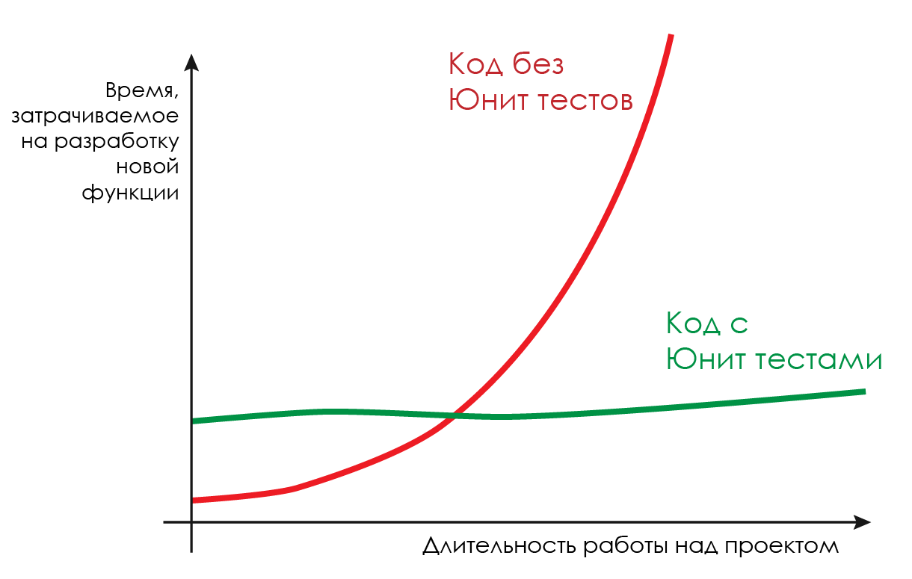
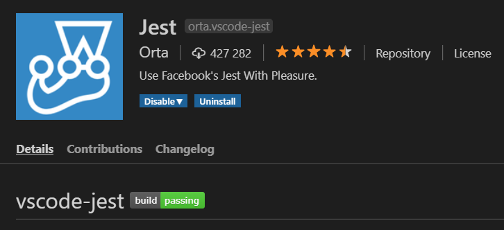

Тестирование
Юнит тесты на JavaScript
Содержание лекции
Тестирование
Ни один серьёзный проект не обходится без тестирования.
Бывает тестирование методом чёрного ящика - когда тестируется конечный интерфейс продукта без доступа и знания исходного кода.
И бывает тестирование методом белого ящика - когда тестируется исходный код программной системы.
Тестирование методом чёрного ящика обычно занимаются тестировщики.
Тестированием белого ящика - программисты. И как раз о таком тестировании мы сейчас и поговорим.
Юнит тесты
Любому проекту нужны тесты. Если заглянуть, например, на GitHub - в каждом мало-мальски объёмном и поддерживаемом проекте можно будет найти папку с тестами.
Это - Юнит-тесты, - цемент, скрепляющий весь код и не дающий ему развалиться.
Юнит-тесты
Юнит-тесты, или Модульные тесты - тесты, которые проверяют
работоспособность отдельных функций в программного коде системы.
Юнит-тесты пишет программист, а не тестировщик.
Когда программист пишет код, вместе с этим кодом он должен писать для него юнит-тесты. Юнит-тесты проверяют работоспособность написанного кода.
И это не что-то дополнительное или необязательное. Это - обязанность любого (практически) программиста, над каким бы проектом он не работал.
Если вы пишете код для реального проекта, который нужно будет поддерживать и обновлять, - вам нужны будут юнит-тесты.
Юнит-тесты
Любой код состоит из набора функций, ну или объектов с методами. И юнит тесты позволяют точечно оценить работоспособность функций, и сказать, где и что работает не по плану.
Это чрезвычайно важно для Регрессионного тестирования - когда вы обновляете часть кода, и нужно убедиться, что ничего из того, что работало раньше, не поломалось.
Или, вот ещё один пример, когда у вас относительно большая кодовая база, например, несколько десятков тысяч строк, вы можете долгое время не работать над какой-то частью программы, и забыв, как работает код, вернуться, и наломать дров. В таком случае, юнит тесты сразу дадут знать, что именно, и в каких местах, пошло не так.
График
Юнит тесты
В первую очередь юнит тесты используются для тестирования логики. Для тестирования интерфейса пользователя существуют другие виды тестов.
А в веб программировании вся основная логика обычно располагается на бэкенде - серверной части приложения. Поэтому юнит тесты не так активно используются во фронтенд разработке.
Но всё равно есть возможности писать юнит тесты для кода, предназначенного для браузера, и мы сейчас научимся это делать.
Юнит тесты в JavaScript
В JS существует множество библиотек (фреймворков) для написания юнит тестов:
- Jest
- Mocha
- Jasmine
- Karma
Jest
Jest - самый многофункциональный и универсальный фреймворк тестирования.
Многие другие фреймворки тестирования сосредоточены на каком-то одном аспекте юнит тестов, и для добавления новой функциональности, которая практически всегда бывает необходимо, требуется устанавливать дополнительные пакеты.
В Jest-е же есть всё и сразу.
Поэтому мы будем рассматривать юнит тесты именно с этим фреймворком.
Установка Jest 1
Чтобы установить Jest, понадобится установленный NodeJS на компьютере. А также пакетный менеджер NodeJS - npm, идущий в комплекте со средой.
Также проект, к которому нужно подключить Jest, должен являться пакетом NodeJS, т.е. содержать файл package.json.
Создать этот файл можно консольной командой:
npm init
Установка Jest 2
Устанавливается Jest с помощью команды:
npm i -D jest
npm i -D @types/jest
Для того, чтобы его можно было удобно запускать из консоли, нужно прописать соответствующую задачу в разделе scripts в файле package.json:
"scripts": {
"test": "jest"
}
Необходимые зависимости
Чтобы тесты могли работать с файлами модулей, необходимо дополнительно установить еще и эти пакеты:
npm i -D @babel/core
npm i -D @babel/preset-env
Затем, в корне проекта создать файл .babelrc, и написать в нём:
{
"env": {
"test": {
"presets": ["@babel/preset-env"]
}
}
}
Запуск
Чтобы запустить все юнит тесты на исполнение, нужно выполнить команду:
npm test
Или установить расширение для VS Code для Jest:
Файлы с тестами
По умолчанию, Jest ищет все файлы, название которых заканчивается на test.js.
Например, если у вас есть файл index.js, то тесты для функций этого файла обычно выносят в файл index.test.js. Или создают отдельную директорию test в корне проекта, куда размещают все файлы тестов.
Юнит тесты
Но есть одна важная особенность. Юнит тесты обычно запускаются в среде NodeJs, а не в браузере, даже если это браузерный JavaScript.
В браузере запускают другой тип тестов - функциональные, но про них будет следующая лекция.
Правила написания функций
Для того, чтобы код было удобно тестировать, нужно стараться как можно больше использовать чистые функции.
Чистые функции - функции, никак не изменяющие общего состояния системы и не имеющие побочных эффектов. Для одного и того же набора входных параметров функция всегда должна возвращать одинаковый результат.
Более подробно о чистых функциях можно почитать здесь.
Суть
Главное правило, которого следует придерживаться в браузерном JS - всегда отделять чистую логику от кода изменения интерфейса (HTML страницы).
Модули
Тесты всегда пишут в отдельных файлах, поэтому возникает необходимость в получении кода из исходных файлов. Нужно ведь как-то обращаться к функциям, которые собираетесь тестировать.
Обычные скриптовые файлы, которые подключаются к HTML странице, нельзя подключить к другому JavaScript файлу. Ведь тесты запускаются в NodeJS, где никакого HTML документа нет.
И получается, что нужно так писать код, чтобы файлы можно было подключить и к HTML странице, и к другому файлу в NodeJS.
И этого можно добиться, структурировав файлы в модули ES6.
Модули ES6
Модули - способ структуризации и группировки JavaScript кода, когда каждый отдельный файл JS предоставляет свое собственное пространство имён с приватными и публичными элементами.
Модули - это те же файлы JavaScript, только с небольшими дополнениями в коде, и альтернативным способом подключения.
Закрытые модули
При обычном подключение JS файлов, все глобально объявленные переменные и функции попадают в общий глобальный контекст.
При использовании модулей же такого не происходит - в глобальный контекст ничего не добавляется. У каждого модуля своё закрытое пространство имён.
По умолчанию, в модуле все переменные и функции закрыты. Это значит, что к ним никак нельзя получить доступ из других файлов/модулей.
Экспорт
В модулях можно помечать, к каким элементам нужно дать возможность обращаться из других модулей.
Это называется Экспортом.
Каждый модуль может экспортировать свои элементы, которые должны быть публичными.
Например, если в модуле (файле) у вас описано 10 функций, и вы экспортируете одну из них - главную, то только эту функцию можно будет использовать в других модулях (файлах).
Импорт
Подключение в один модуль экспортируемых элементов из другого модуля называется Импортом.
Т.е. сам по себе экспорт не делает глобально видимыми экспортируемые объекты. Экспорт просто позволяет делать импорт.
Если вы хотите что-то из одного файла использовать в другом файле, то в файле-источнике нужно прописать экспорт нужного элемента, а в другом файле сделать его импорт.
Ключевое слово export
Для того, чтобы отметить элемент, как экспортируемый, к нему в начале, перед определением, нужно прописать ключевое слово export.
Хоть можно экспортировать и переменные, рекомендуется экспортировать только функции или классы.
export function myFunc(arg1) {
console.log('I work with ' + arg1);
return 0;
}
export class SomeClass {
constructor() {
console.log('Constructing an instance of the class SomeClass');
}
}
export const key = '6723tgfbvysdbcswygr23gd8237Tr3rwrr';
Комбинированный экспорт
Можно записывать экспорт иначе, не прописывая ключевое слово export по всему коду, а написав весь перечень экспортируемых объектов за один раз:
function myFunc(arg1) {
console.log('I work with ' + arg1);
return 0;
}
class SomeClass {
constructor() {
console.log('Constructing an instance of the class SomeClass');
}
}
const key = '6723tgfbvysdbcswygr23gd8237Tr3rwrr';
// Комбинированный список экспортируемых объектов
export { myFunc, SomeClass, key };
Ключевое слово import
Подключение экспортируемых элементов осуществляется с помощью ключевого слова import. Обычно это прописывается в самом начале файла.
Есть несколько вариаций записи этой команды.
Выборочный импорт
Можно импортировать конкретные объекты по имени, тогда это записывается следующим образом:
// Импорт функции myFunc и класса SomeClass из другого модуля (файла) module-file-name.js
import {myFunc, SomeClass} from './module-file-name.js';
Тогда объекты будут доступны по прописанным именам:
const retVal = myFunc(123);
const instance = new SomeClass();
Суть этого способа в том, что мы импортируем не всё, что экспортирует модуль, а только то, что нам нужно.
Полный импорт
Также можно импортировать весь модуль целиком:
// Импортируем всё в объект myModule из модуля (файла) module-file-name.js
import * as myModule from './module-file-name.js';
Тогда доступ к импортированным элементам будет осуществляться через ключи (свойства) объекта импорта:
const retVal = myModule.myFunc(123);
const instance = new myModule.SomeClass();
let a = 'key string: ' + myModule.key;
Подключение модуля к странице
Для того, чтобы подключить к HTML странице JavaScript файл, являющийся модулем (а модулем будет считаться любой JavaScript файл, в котором присутствуют команды import или export), нужно в теге script использовать дополнительный атрибут type="module".
<script src="js/module-file-name.js" type="module"></script>
Модули, которые используются в других модулях (через import), дополнительно подключать к HTML документу не нужно. Обычно подключается лишь один главный модуль, а через него уже идут связи с остальными.
Связывание модулей

Jest
Jest - наиболее объёмный и функциональный фреймворк.
В нём из коробки идут все необходимые компоненты:
- Богатый набор матчеров
- Моки для функций и модулей
- Спаи
- Интеграции с babel, rewire, jsdom и др.
- Множество CLI опций
- Метрики покрытия тестами
Первый тест
Простейший пример теста:
test('Два плюс два равно четыре', function() {
expect(2 + 2).toBe(4);
});
Структура теста
Любой тест задаётся вызовом функции test, или функции it - это синонимы.
Эта функция принимает первым параметром строку - описание теста. Здесь принято кратко, в двух словах, описывать, что проверяет данный тест.
test('Что проверяем', function() {
// Тело теста
});
// или
it('Что проверяем', function() {
// Тело теста
});
Triple A
Стандарт оформления юнит тестов - схема ААА, когда тело теста условно разделяется на три части:
- Arrange - назначение. Создание всех необходимых переменных и объектов для выполнения проверяемого действия.
- Act - действие. Выполнение тестируемого действия.
- Assert - проверка. Сравнение ожидаемого результата тестируемого действия с фактическим результатом.
test('Что тестируем', function() {
// Arrange
// Act
// Assert
});
Пример ААА
Тестируем функцию Math.sqrt():
test('Корень из 36 это 6', function() {
// Arrange - создаём переменные
const number = 36;
const expectedSqrt = 6;
// Act - тестируемое действие и получение реального результата
const realSqrt = Math.sqrt(number);
// Assert - сравнение, совпал ли ожидаемый и реальный результат
expect(realSqrt).toBe(expectedSqrt);
});
Матчеры
Результат любого теста отталкивается от какой-либо специфической проверки, от сравнения ожидаемого результата и фактического результата. И для выполнения этих проверок используются Матчеры.
Собственно, Матчеры - это категория функций и объектов в библиотеке тестирования, которые используются для написания проверок в тесте (секции Assert).
Любой тест опирается на какой-нибудь матчер. Не может быть теста без матчера.
Матчеры в Jest
Все матчеры в Jest прописываются с помощью функции expect().
Например, самая стандартная проверка на равенство:
expect(8 * 6).toBe(48);
И такой синтаксис всегда: вызывается функция expect(), в неё передаётся полученный результат, а затем у вернувшегося объекта вызывается один из методов (здесь - toBe) проверки, в котором уже указывается ожидаемый результат.
Вызовов функции expect() может быть несколько в тесте, но лучше без необходимости не использовать больше одного.
Функции-матчеры
В объекте, который возвращает функция expect(), целая куча разных матчеров на любую ситуацию.
Полный их список можно найти в официальной документации.
Функции матчеры называются таким образом, чтобы из строки кода проверки формировалось практически полноценное английское предложение.
Например:
// Ожидаем, что строка будет иметь длину 7
expect(string).toHaveLength(7);
// Ожидаем, что число будет больше или равно 25
expect(number).toBeGreaterThanOrEqual(25);
// Ожидаем, что имя не будет содержать символа '-'
expect(name).not.toContain('-');
Виды матчеров
Условно, все функции-матчеры можно разбить на следующие категории:
- Проверки на равенство
- Проверки для чисел
- Проверки для строк
- Проверки для коллекций
- Проверки объектов
- Проверки исключений
- Проверки снапшотов
- Проверки моков и спаев
Проверки на равенство
Самая основная проверка, которая используется в 3/4 тестов - toBe().
toBe() сравнивает полученное значение с ожидаемым, по подобию оператора ===. Т.е. строгое сравнение для примитивов, и ссылочное сравнение для объектов.
const item = {
name: 'Сливочное масло',
mass: 250,
};
test('Весит 250 грамм', function() {
expect(item.mass).toBe(250);
});
test('Называется "Сливочное масло"', () => {
expect(item.name).toBe('Сливочное масло');
});
toBe - по ссылке
Матчер toBe() не подойдёт, если нужно сравнить по значению два объекта с разными ссылками:
function getCart() {
return {
name: 'Сливочное масло',
mass: 250,
};
}
test('В корзине находится указанная пачка масла', function() {
const expectedItem = {
name: 'Сливочное масло',
mass: 250,
};
const cartItem = getCart();
// Упсс... Тест не проходит
expect(cartItem).toBe(expectedItem);
});
Матчер toEqual
Для сравнения объектов по значению нужно использовать матчер toEqual().
toEqual() рекурсивно сравнивает все ключи и значения между двумя объектами.
function getCart() {
return {
name: 'Сливочное масло',
mass: 250,
};
}
test('В корзине находится указанная пачка масла', function() {
const expectedItem = {
name: 'Сливочное масло',
mass: 250,
};
const cartItem = getCart();
// Все работает!
expect(cartItem).toEqual(expectedItem);
});
Сравнения с константами
В Jest есть много матчеров, которые сравнивают полученный результат с какими-то константными значениями. Можно обойтись и без них, используя универсальный toBe(), но они позволяют упростить чтение теста и сделать код чище.
Например, матчер toBeFalsy():
expect(1 === 8).toBeFalsy();
То же самое можно написать с использованием стандартного toBe():
expect(1 === 8).toBe(false);
Специфичные матчеры
К подобным матчерам относятся:
- toBeDefined() - что угодно, кроме undefined
- toBeFalsy() - равно false
- toBeNull() - равно null
- toBeTruthy() - равно true
- toBeUndefined() - равно undefined
- toBeNaN() - равно NaN
Пример тестирования функции деления
function divide(a, b) {
return a / b;
}
test('Целочисленное деление', function() {
const a = 32;
const b = 2;
const expected = 16;
const result = divide(a, b);
expect(result).toBe(expected);
});
test('Деление нуля', function() {
const a = 0;
const b = 2;
const expected = 0;
const result = divide(a, b);
expect(result).toBe(expected);
});
test('Деление на ноль', function() {
const a = 32;
const b = 0;
const expected = Infinity;
const result = divide(a, b);
expect(result).toBe(Infinity);
});
test('Деление непонятно чего непонятно на что', function() {
const a = [1,2,3,4,5,6];
const b = ',';
const result = divide(a, b);
expect(result).toBeNaN();
});
Отрицание матчера
Любой матчер можно обратить. Т.е. вместо матчера "должно быть равно" сделать матчер "недолжно быть равно".
И это делается с помощью специального свойства not.
Оно прописывается перед вызовом функции-матчера, и меняет логику проверки на противоположную.
expect(что-то).not.матчер(что-то);
Пример отрицания
function bestFlavor() {
return 'картошка';
}
test('Лучший вкус - не кокос', function() {
const flavor = bestFlavor();
expect(flavor).not.toBe('кокос');
});
test('Лучший вкус - не банан', function() {
const flavor = bestFlavor();
expect(flavor).not.toBe('банан');
});
Матчеры для чисел
К специфичным для проверки чисел матчерам, относятся матчеры диапазонов, которые позволяют проверить, попадает ли полученное число в ожидаемый диапазон значений.
Это матчеры:
- toBeGreaterThan() - больше чем
- toBeGreaterThanOrEqual() - больше или равно чем
- toBeLessThan() - меньше чем
- toBeLessThanOrEqual() - меньше или равно чем
Пример диапазонных матчеров
function getRandomInt(min, max) {
return Math.ceil(min) + Math.floor(Math.random() * max);
}
test('Случайное число из диапазона положительных чисел', function() {
const min = 20;
const max = 30;
const value = getRandomInt(min, max);
expect(value).toBeGreaterThanOrEqual(min);
expect(value).toBeLessThanOrEqual(max);
});
test('Случайное число из диапазона отрицательных чисел', function() {
const min = -50;
const max = -10;
const value = getRandomInt(min, max);
expect(value).toBeGreaterThanOrEqual(min);
expect(value).toBeLessThanOrEqual(max);
});
Проверка вещественных чисел
Из-за своей природы, в JavaScript нельзя надёжно сравнивать два вещественных числа. Поэтому и матчер toBe() здесь не подходит.
Вещественные (дробные) числа нужно всегда сравнивать с помощью матчера toBeCloseTo()!
test('0.1 плюс 0.2 не равно 0.3 в JS', function() {
// Тест пройдёт, 0.1 + 0.2 действительно НЕ равно 0.3
expect(0.1 + 0.2).not.toBe(0.3);
});
test('0.1 плюс 0.2 равно примерно 0.3', function() {
// Такой тест будет работать
expect(0.1 + 0.2).toBeCloseTo(0.3);
});
Проверка строк по регулярным выражениям
Строки можно проверять на соответствие регулярному выражению через матчер toMatch().
function generateRandomName() {
const surnames = ['Пётр', 'Владислав', 'Евгений', 'Марат', 'Николай', 'Валерий', 'Василий'];
const lastnames = ['Мельчиков', 'Доргало', 'Крючочкин', 'Дикай', 'Ломоносов', 'Скорожевский', 'Вепрь', 'Степной'];
const randomSurname = surnames[Math.floor(Math.random() * surnames.length)];
const randomLastname = lastnames[Math.floor(Math.random() * lastnames.length)];
return randomSurname + ' ' + randomLastname;
}
test('Имя состоит из двух слов', function() {
const newName = generateRandomName();
expect(newName).toMatch(/^[А-ЯЁ][а-яё]+ [А-ЯЁ][а-яё]+$/);
});
test('Тот же тест, только в профиль', function() {
const pattern = new RegExp('^[А-ЯЁ][а-яё]+ [А-ЯЁ][а-яё]+$');
const newName = generateRandomName();
expect(newName).toMatch(pattern);
});
Проверки для коллекций
Вхождение в коллекцию
С помощью матчера toContain() и toContainEqual() проверяется вхождение элемента в коллекцию (массив, строку, или другое перечисление).
При использовании этого матчера, в expect() нужно передавать само перечисление, а в toContain() - значение, наличие которого в предыдущем перечислении нужно проверить.
const arr = [2, 53, 11, 8, 25];
function addToArr(value) {
arr.push(value);
}
test('Добавление в массив работает корректно', function() {
const newItem = 17;
addToArr(newItem);
expect(arr).toContain(newItem);
});
Проверка длины перечисления
Если нужно проверить количество элементов в перечислении, можно воспользоваться матчером toHaveLength(), который проверяет значение свойства length.
function makeLongString(char, length) {
return char.repeat(length);
}
test('Получается строка верной длины', function() {
const desiredLength = 20;
const resultStr = makeLongString('0', desiredLength);
expect(resultStr).toHaveLength(desiredLength);
});
Проверки объектов
Объекты можно проверять на наличие "под-объектов", или, если выразиться иначе, на соответствие шаблона объекта.
Т.е. можно задать объект, и ожидать, что этот объект (его ключи и значения по ним), будет содержаться внутри другого проверяемого объекта.
Это производится с помощью матчера toMatchObject().
Пример с toMatchObject
const houseForSale = {
bath: true,
bedrooms: 4,
kitchen: {
amenities: ['плита', 'духовка', 'стиральная машина'],
area: 20,
wallColor: 'белый'
},
};
test('the house has my desired features', function() {
const desiredHouse = {
bath: true,
kitchen: {
// Интересность
amenities: expect.arrayContaining(['плита']),
wallColor: expect.stringMatching(/белый|желтый/)
}
};
expect(houseForSale).toMatchObject(desiredHouse);
});
Проверка наличия ключа
Матчер toHaveProperty() используется для проверки объекта на наличие в нём указанного свойства (ключа).
// Тестируемый объект
const houseForSale = {
bath: true,
bedrooms: 4,
kitchen: {
amenities: ['плита', 'духовка', 'стиральная машина']
area: 20,
wallColor: 'белый',
'nice.oven': true
},
'ceiling.height': 2
};
test('в этом доме есть всё что нужно', function() {
// Обычный синтаксис
expect(houseForSale).toHaveProperty('bath');
expect(houseForSale).toHaveProperty('bedrooms', 4);
expect(houseForSale).not.toHaveProperty('pool');
// Используя точечную нотацию
expect(houseForSale).toHaveProperty('kitchen.area', 20);
expect(houseForSale).toHaveProperty('kitchen.amenities', ['плита', 'духовка', 'стиральная машина']);
expect(houseForSale).not.toHaveProperty('kitchen.open');
});
Проверки исключений
Можно тестировать возникновение исключений при помощи матчера toThrow().
В параметрах можно указывать, какое конкретно исключение ожидается получить.
Для этого матчера используется несколько иной синтаксис чем раньше.
Функция, в которой ожидается происхождение исключения, должна быть вызвана внутри метода expect(), вот по такому принципу:
expect(() => {
// Вот здесь должен находиться код, в котором
// Ожидается возникновение исключения
}).toThrow();
Пример с toThrow()
let compile = function() {
console.log([].join.call(arguments, ' -> '));
}
function drink(something) {
if (something === 'чернила осьминога') {
compile = function() {
if (arguments.length === 3) {
const includes = [].includes.bind(arguments);
if (includes('волосы козы') && includes('гнилая груша') && includes('муравьиный яд')) {
throw Error('Ктулху');
}
}
}
} else {
console.log('Bueeeh..');
}
}
test('вызов Ктулху', function() {
expect(function() {
drink('чернила осьминога');
compile('волосы козы', 'гнилая груша', 'муравьиный яд');
}).toThrow('Ктулху');
});
Снапшоты, или магия Jest
Снапшот - это автоматически генерируемое значение ожидаемого результата, полученное из фактического результата при первом запуске теста.
Т.е. снапшоты можно использовать только тогда, когда вы уверены, что ваша функция написана правильно и работает как надо.
Тогда можно даже не думать, какой должен быть ожидаемый результат: вы просто задаёте начальные условия, и результат выводится и запоминается сам.
Области применения снапшотов
Но не стоит злоупотреблять снапшотами. Их рекомендуется использовать только тогда, когда ожидаемым результатом является какая-нибудь массивная структура, которую долго прописывать вручную.
Например, JSON объект, получаемый в качестве ответа от сервера по какому-нибудь API. Или ветвь из DOM дерева.
Если вы ожидаете, что результатом функции должно быть простое значение, типа true, то для этих целей снапшоты точно лучше не использовать.
Виды снапшотов
Снапшоты в Jest бывают двух видов:
- Внешние
- Встроенные
Значения внешних снапшотов Jest хранит в отдельных файлах.
А значения встроенных снапшотов включаются прямо в код файла тестов.
Внешние снапшоты
Для использования внешнего снапшота предназначен матчер toMatchSnapshot().
Самостоятельно нигде не нужно прописывать ожидаемого результата. Вы просто получаете фактический результат и используете для него этот матчер:
expect(полученныйРезультат).toMatchSnapshot();
И тогда, после первого запуска такого теста, в папке с этим тестом будет создана подпапка __snapshots__, в которой появится файл с ожидаемым результатом для данного теста.
Пример с внешним снапшотом
// Тестируемая функция
function getDataById(id) {
if (id === 1) {
return { name: "The Great Gatsby", year: 1925, genre: "novel" };
} else if (id === 2) {
return { name: "Ulysses", year: 1918, genre: "modernist novel" };
} else {
return null;
}
}
test('Получение данных по id', function() {
const id = 1;
const data = getDataById(id);
expect(data).toMatchSnapshot();
});
// Jest Snapshot v1, https://goo.gl/fbAQLP
exports[`dwadad 1`] = `
Object {
"genre": "novel",
"name": "The Great Gatsby",
"year": 1925,
}
`;
Встроенные снапшоты
Для использования встроенных снапшотов может понадобится установка пакета prettier:
npm i -D prettier
Суть встроенных снапшотов аналогична, только они интегрируются прямо в текст вашего теста, а не в отдельный файл.
Матчер для использования - toMatchInlineSnapshot().
expect(полученныйРезультат).toMatchInlineSnapshot();
Пример со встроенным снапшотом
Переделаем предыдущий пример под встроенные снапшоты:
test('Получение данных по id', function() {
const id = 2;
const data = getDataById(id);
expect(data).toMatchInlineSnapshot();
});
Стоит запустить этот тест, и немножко подождать, как...
test("Получение данных по id", function() {
const id = 2;
const data = getDataById(id);
expect(data).toMatchInlineSnapshot(`
Object {
"genre": "modernist novel",
"name": "Ulysses",
"year": 1918,
}
`);
});
Обновление снапшота
После первого запуска, результат каждого нового запуска теста будет сравниваться с первым результатом.
Но если вам необходимо обновить снапшот (допустим, вы переделали тестируемую функцию), то это выполняется следующей командой в терминале:
npm test -- --updateSnapshot
setup и teardown
Не редко возникает ситуация, когда для выполнения теста нужна какая-то предварительная инициализация. Или наоборот, после каждого теста требуется подчищать оставленный мусор.
Для этого в Jest есть 4 глобальных функции:
- beforeAll() - выполняется 1 раз перед всеми тестами
- afterAll() - выполняется 1 раз после всех тестов
- beforeEach() - выполняется каждый раз перед каждым тестом
- afterEach() - выполняется каждый раз после каждого теста
В эти функции передаётся функция, в которой уже и описываются все действия:
beforeAll(function() {
// Действия
});
Примеры c -All
const globalDatabase = null;
beforeAll(function() {
// Инициализируем БД и
// Добавляем в БД данные для тестирования
globalDatabase = makeGlobalDatabase();
globalDatabase.insert({testData: 'foo'});
globalDatabase.insert({testData: 'bar'});
globalDatabase.insert({testData: 'baz'});
});
afterAll(function() {
// Удаляем все тестовые данные из БД
globalDatabase.remove({testData: 'foo'});
globalDatabase.remove({testData: 'bar'});
globalDatabase.remove({testData: 'baz'});
});
test('Поиск на одно поле работает', function() {
return globalDatabase.find('foo', {}, function(res) {
expect(res.length).toBeGreaterThan(0);
});
});
test('Поиск на несколько полей работает', function() {
return globalDatabase.find(['foo', 'bar'], {}, function(res) {
expect(res.length).toBeGreaterThan(0);
});
});
Пример с afterEach()
const globalDatabase = makeGlobalDatabase();
function cleanUpDatabase(db) {
db.cleanUp();
}
afterEach(function() {
cleanUpDatabase(globalDatabase);
});
test('Поиск работает', function() {
return globalDatabase.find('ret', {}, function(res) {
expect(results.length).toBeGreaterThan(0);
});
});
test('Добавление работает', function() {
return globalDatabase.insert('veg', makeThing(), function(res) {
expect(response.success).toBeTruthy();
});
});
Группировка тестов
С помощью глобальной функции describe() можно разбивать тесты на группы.
Например, так обычно разбивают на группы тесты, относящиеся к разной функциональности.
describe('Описание группы тестов 1', function() {
test('Тест 1 из группы 1', function() {
// AAA
});
test('Тест 2 из группы 1', function() {
// AAA
});
});
describe('Описание группы тестов 2', function() {
test('Тест 1 из группы 2', function() {
// AAA
});
test('Тест 2 из группы 2', function() {
// AAA
});
test('Тест 3 из группы 2', function() {
// AAA
});
})
Вложенность
Функции describe() могут быть свободно вложены друг в друга.
describe('Группа 1', function() {
describe('Подгруппа 1', function() {
// Тесты подгруппы 1 группы 1
});
describe('Подгруппа 2', function() {
describe('Под-подгруппа 1', function() {
// Тесты под-подгруппы 1 подгруппы 2 группы 1
});
// Тесты подгруппы 2 группы 1
});
// Тесты группы 1
});
describe('Группа 2', function() {
// Тесты группы 2
});
Пример с группировкой
const binaryStringToNumber = function(binString) {
if (!/^[01]+$/.test(binString)) {
throw new CustomError('Not a binary number.');
}
return parseInt(binString, 2);
};
describe('Тесты функции преобразования битовой строки в число', function() {
describe('Использование неправильной битовой строки', function() {
test('Сравнение не чисел вызывает исключение CustomError', function() {
expect(function() {
binaryStringToNumber('abc')
}).toThrowError(CustomError);
});
test('Лишние пробелы вызывают исключение CustomError', function() {
expect(dunction() {
binaryStringToNumber(' 100')).toThrowError(CustomError);
});
});
describe('Использование правильной битовой строки', function() {
test('Возвращает корректное число', function() {
expect(binaryStringToNumber('100')).toBe(4);
});
});
});
Группировка с setup и teardown
Но помимо семантических отличий, у группировки тестов есть ещё и функциональные отличия.
В каждой группе describe() могут присутствовать свои функции before- и after-.
Моки
Часто весь код бывает очень сильно переплетён между собой и связан с какими-то внешними зависимостями. В функции вы можете обращаться к другой функции, которая обращается к третьей функции, и т.д.
Но правильные юнит тесты должны проверять работоспособность лишь одного фактического действия, одной функции.
Тогда как проверить только эту первую функцию без участия всех внутренних?
На помощь приходят Моки.
Мок - это подставная функция или объект. Мок внедряют в тестируемую функцию, и она использует нашу подставную функцию вместо настоящей.
Спаи
Спаи - это засланные в функции шпионы.